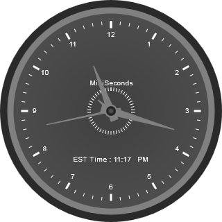

1. Create a new ASP.NET Web application. For details, take a look at the Creating ASP.NET Web Application section.
2. Drag and drop the Circular Gauge Control onto the .aspx page in the new web application.
3. Add the necessary pointers and scales as shown in below code.
|
[ASPX]
< syncfusion : CircularGauge AutoFormat ="Sandune" FrameInnerWidth ="9" FrameOuterWidth ="15" ID="ISTGauge"runat="server"> <Scales> <syncfusion:CircularScaleLabelAutoAngle="false"Minimum="0"Maximum="12"BorderWidth="1" StartAngle="270"ScaleDirection="Clockwise"PointerCapRadius="8"PointerCapBorderWidth="4" ScaleRadius="130"ScaleBarSize="0"SweepAngle="360"MajorIntervalValue="1"MinorIntervalValue="0.2"> <Labels> <syncfusion:CircularGaugeLabelDistanceFromScale="5"IncludeFirstValue="false"LabelStyle="MajorInterval" LabelPlacement="Near"Angle="0"/> </Labels> <Ticks> <syncfusion:CircularGaugeTickTickStyle="MajorInterval"TickWidth="3" TickHeight="10"TickPlacement="Near"Angle="0"/> <syncfusion:CircularGaugeTickTickStyle="MinorInterval"TickWidth="1"TickHeight="5" Angle="0"TickPlacement="Near"/> </Ticks> <Pointers> <syncfusion:CircularPointerPointerLength="70"ShowBackNeedle="true"BackNeedleLength="10" PointerWidth="10"Value="3"PointerNeedleType="Needle"NeedleStyle="Triangle"/> <syncfusion:CircularPointerPointerLength="95"ShowBackNeedle="true"BackNeedleLength="10" PointerWidth="10"Value="0"PointerNeedleType="Needle"NeedleStyle="Triangle"/> <syncfusion:CircularPointerPointerLength="95"ShowBackNeedle="true"BackNeedleLength="10" PointerWidth="2"Value="1.5"PointerNeedleType="Needle"NeedleStyle="Triangle"/> </Pointers> <CustomLabel> <syncfusion:GaugeCustomLabelLabelValue="IST-Time"Location="160,230"/> </CustomLabel> </syncfusion:CircularScale> <syncfusion:CircularScaleLabelAutoAngle="false"Minimum="0"Maximum="1000"BorderWidth="2" StartAngle="270"ScaleDirection="Clockwise"PointerCapRadius="8"PointerCapBorderWidth="4" ScaleRadius="35"ScaleBarSize="0"SweepAngle="360"MajorIntervalValue="20"> <Ticks> <syncfusion:CircularGaugeTickTickStyle="MajorInterval"TickWidth="1" TickHeight="5"TickPlacement="Near"Angle="0"/> </Ticks> <Pointers> <syncfusion:CircularPointerPointerLength="25"ShowBackNeedle="true"BackNeedleLength="5" PointerWidth="5"Value="3"PointerNeedleType="Needle"NeedleStyle="Triangle"/> </Pointers> <CustomLabel> <syncfusion:GaugeCustomLabelLocation="160, 120"LabelValue="MilliSeconds"/> </CustomLabel> </syncfusion:CircularScale> </Scales> </syncfusion:CircularGauge> |
4. Add the below script in the .aspx page:
|
[Script]
< script type ="text/javascript">
window.setInterval("setClock()", 1); function setClock() { var estDay, pstDay, mstDay, istDay, pstTime, mstTime, istTime, estTime; var time = new Date(); var utcHours = time.getUTCHours(); var utcMinutes = time.getUTCMinutes(); var utcSeconds = time.getUTCSeconds(); var utcMilliseconds = time.getUTCMilliseconds(); if (utcHours - 5 < 0) { var estHours = (utcHours - 5 + 24) } else { var estHours = (utcHours - 5) } if (estHours > 12) { estDay = "PM"; estHours = estHours - 12; } else { estDay = "AM"; }
utcSeconds = (utcSeconds / 60) * 12; utcMinutes = (utcMinutes / 60) * 12 + utcSeconds / 60; if (estHours == 12) estHours = 0; estHours = estHours + (utcMinutes / 12); var estText = parseInt(estHours) == 0 ? 12 : parseInt(estHours); var utcmin = (parseInt(time.getUTCMinutes()) < 10) ? "0" + parseInt(time.getUTCMinutes()) : parseInt(time.getUTCMinutes()); estTime = "EST Time : " + estText + ":" + utcmin + " " + estDay; $("#<%=this.ISTGauge.ClientID %>").sfCircularGauge("SetCustomLabelValue", 0, 0, estTime); $("#<%=this.ISTGauge.ClientID %>").sfCircularGauge("SetPointerValue", 0, 0, estHours); $("#<%=this.ISTGauge.ClientID %>").sfCircularGauge("SetPointerValue", 0, 1, utcMinutes); $("#<%=this.ISTGauge.ClientID %>").sfCircularGauge("SetPointerValue", 0, 2, utcSeconds); $("#<%=this.ISTGauge.ClientID %>").sfCircularGauge("SetPointerValue", 1, 0, utcMilliseconds); } </script> |
5. Build and run the application. The output will be as the figure given below:
